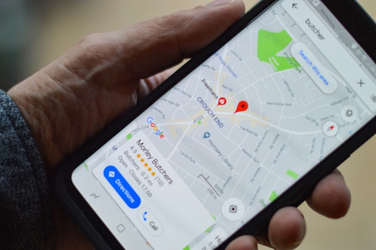

Local Search Engine Optimization (local SEO) is
similar to (national) SEO in that it is also a process
affecting the visibility of a website or a web page in a web search
engine's unpaid results (known as its SERP, search engine results
page) often referred to as "natural", "organic", or "earned"
results.[1] In general, the higher ranked on the search results page
and more frequently a site appears in the search results list, the
more visitors it will receive from the search engine's users; these
visitors can then be converted into customers.
The Birth of Local SEO
The origin of local SEO can be traced back[5] to 2003-2005 when search
engines tried to provide people with results in their vicinity as well
as additional information such as opening times of a store, listings
in maps, etc.
Local Search Results
Local searches trigger search engines to display two types of results
on the Search engine results page: local organic results and the
'Local Pack'.[3] The local organic results include web pages related
to the search query with local relevance. These often include
directories such as Yelp, Yellow Pages, Facebook, etc.[3] The Local
Pack displays businesses that have signed up with Google and taken
ownership of their 'Google My Business' (GMB) listing.
Google Business Profile
Google Business Profile (GBP), formerly Google My Business (GMB) is a
free tool that allows businesses to create and manage their Google
Business listing. These listings must represent a physical location
that a customer can visit. A Google Business listing appears when
customers search for businesses either on Google Maps or in Google
SERPs. The accuracy of these listings is a local ranking factor.
Ranking Factors
Major search engines have algorithms that determine which local
businesses rank in local search. Primary factors that impact a local
business's chance of appearing in local search include proper
categorization in business directories, a business's name, address,
and phone number (NAP) being crawlable on the website, and citations
(mentions of the local business on other relevant websites like a
chamber of commerce website).[9]
Local Ranking according to Google
Prominence, relevance, and
distance are the three main criteria Google
claims to use in its algorithms to show results that best match a
user's query.[12]
-
Prominence reflects how well-known is a place in
the offline world. An important museum or store, for example, will
be given more prominence. Google also uses information obtained on
the web to assess prominence such as review counts, links, articles.
-
Relevance refers to Google's algorithms attempt to
surface the listings that best match the user's query.
-
Distance refers to Google's attempt to return those
listings that are the closest the location terms used in a user's
query. If no location term is used then "Google will calculate
distance based on what's known about their location".